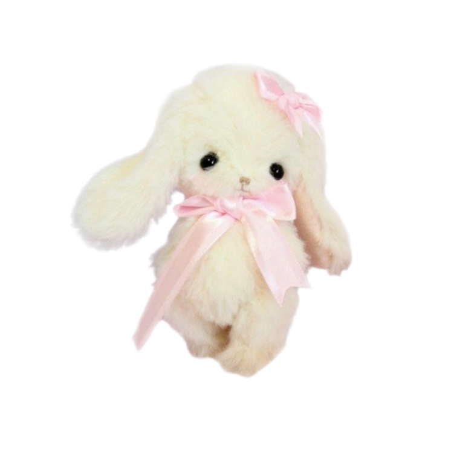
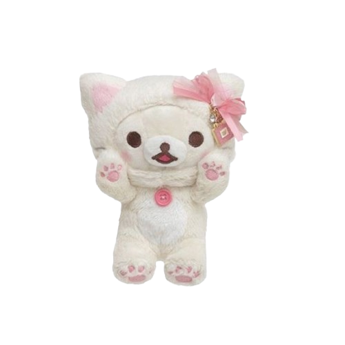

Hello! My name is Somara aka scoutswifeforever, You may already know me as someone who does the posing tf2 videos but theres alot of stuff I haven't stated about myself that I wanted to share through this info page! Anyways, My name is Somara, My age is i rather hide, I am from the Philippines, and I am into the mcbling and cutecore aesthetic. People calls me a larper alot even though i DO play tf2 and i've known tf2 when i was a kid so it doesn't make me any less of a larper if i already knew it to begin with. Yes, i am a sharing yumesshipper and secondly, I will happily give my lovely yumeshippers fanart!


DNI:
Nothing, because I can handle them :).
Nothing, because I can handle them :).